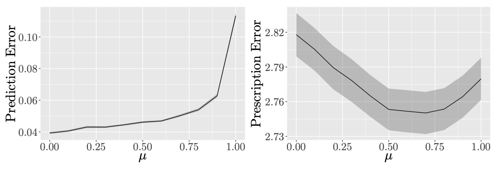
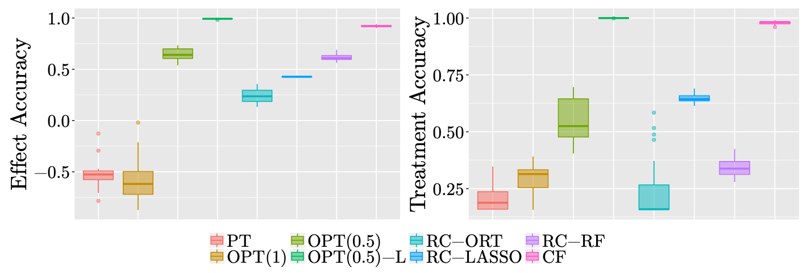
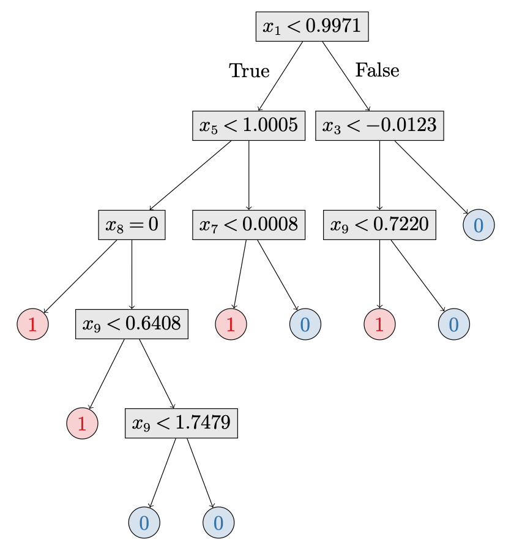
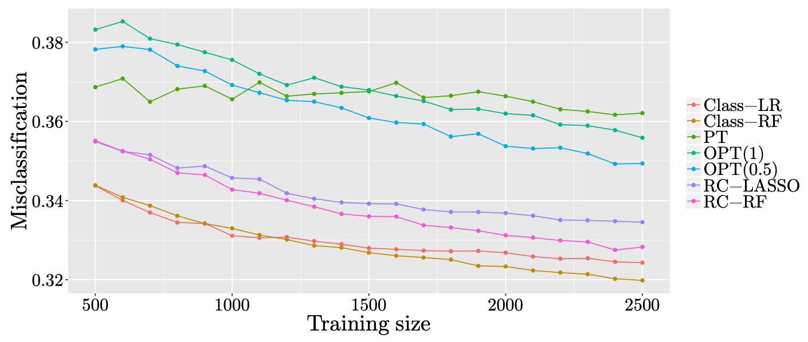
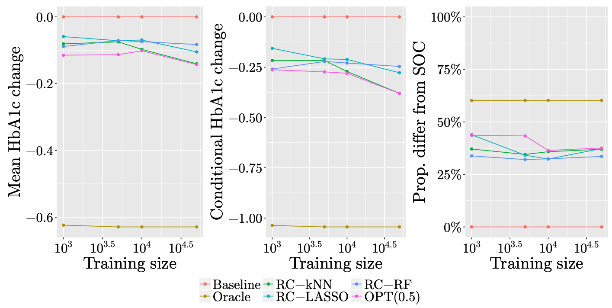

- \(\mu = 0.5\)処方の誤差と予測の誤差を半々に足す設定で、たいていよい結果になったと論文は述べる。\(\mu=1\)（処方の誤差だけ）では予測の誤差が大きくなり、処方の誤差も最小にならなかった（論文 Fig. 2 の例）。
- \(R^2 = 0.759\)IHDP のデータで個別の処置効果を推定したときのテストの \(R^2\)。次に高い RC–RF は 0.704、因果フォレストは 0.543 だった（論文 Table 2）。
- 0.6% ＋ 0.6%ワルファリンの投与量で、訓練データ 2,500 件のとき、誤分類率は OPT(1) が貪欲な PT より約 0.6% 低く、OPT(0.5) がさらに約 0.6% 低かった。ただし、回帰して比べる方法にはどちらも及ばなかった。
観察データから処置を選ぶには、見えない反実仮想を推し量り、割当ての偏りを考え、人が読める規則を出す必要がある
データは特徴量 \(x_i\in\mathbb{R}^d\)、実際に受けた処置 \(z_i\in\{1,\dots,m\}\)、結果 \(y_i\in\mathbb{R}\) の組 \(n\) 個からなる。求めたいのは、特徴量から処置を選ぶ関数 \(\tau:\mathbb{R}^d\to\{1,\dots,m\}\) である。論文はこの問題の難しさを 3 つ挙げる。1 つ目は受けなかった処置の結果（反実仮想）が観測されないこと。これが分かれば、問題はふつうの多クラス分類になる。2 つ目はデータの多くが無作為化実験ではなく観察研究から来るので、処置の割当てが特徴量に依存すること。3 つ目は特に医療では人が理解できる規則が必要なことである。
よく使われてきたのは、処置ごとに \(\mathbb{E}[Y\mid Z=t,X=x]\) を推定し、予測が最もよい処置を選ぶ回帰して比べる方法（regress-and-compare）である。論文は、これが深さ 1 で \(m\) 個の葉をもつ木にあたると指摘する。ただし、各モデルは非線形になりうるので解釈しにくい。各モデルはその処置を受けた人のデータしか使わず、モデルどうしが学習の中で関わり合わないので、効果の低い規則になるおそれもある。傾向スコアで重みをつけて分類問題に直す方法もあるが、推定した確率で割るので、標本が小さいと推定が不安定になりうる。
木を使う先行研究として、Kallus（2017）の個別化の木（personalization trees、PT）がある。分類木を処方の誤差を直接最小にするように改めたものである。論文との違いは目的関数に予測の誤差を加えることと、Bertsimas と Dunn の方法で最適に近い木を作ることにある。Athey と Imbens の因果木や Wager と Athey の因果フォレストは処置効果を推定するもので、処方そのものは出さず、処置も二値に限られる。
処方の誤差に結果の予測の誤差を重み µ で足し合わせた目的関数を最小にする
結果は小さいほどよいとする（例：糖尿病の血糖値）。1 つ目の目的はルール \(\tau\) に従ったときの結果の和である。観測された処置を選べば観測値を、別の処置を選べば反実仮想の推定値 \(\hat y_i(t)\) を使う。論文はこれを処方の誤差と呼ぶ。2 つ目の目的は観測された結果の予測の二乗誤差である。
論文はこの 2 つの凸結合を最小にするルールを求める。
\(\mu\) は処方の重み（prescription factor）と呼ばれるハイパーパラメータで、処方の誤差と予測の誤差のどちらを重く見るかを決める。\(\mu=1\) では Kallus（2017）と同じ目的関数になり、論文はこれを処方の誤差の不偏で一致する推定量だと述べる。\(\mu=0\) では予測だけを重視する Bertsimas と Dunn（2017）の目的関数になる。
反実仮想は同じ葉でその処置を受けた人の結果の平均で埋め、葉ごとに結果の合計が最小の処置を選ぶ
決定木はデータを似た人の集まりに分ける。論文はこの集まりを反実仮想の推定に使う。人 \(i\) が処置 \(t\) を受けたときの結果は、\(i\) と同じ葉 \(X_{l(i)}\) に入り、実際に \(t\) を受けた人の結果の平均で推定する。
この推定値を目的関数に入れると、目的関数は木の形だけで決まる（論文の問題 (6)）。各葉では、処置ごとに葉の全員の結果（観測値か反実仮想）を足し、合計が最も小さい処置をその葉の処方にする。予測の誤差は各人の観測値と、同じ葉で同じ処置を受けた人の平均との差から計算する。
反実仮想が少ない人数から推定されるのを避けるため、ある処置を受けた人が葉に \(n_{\text{treatment}}\) 人以上いないと、その処置を葉の処方にできないようにしている。なお、葉の中の平均で反実仮想を埋めることは、葉の中では処置の割当てが結果と無関係だとみなすことにあたる（解説者の注）。論文は傾向スコアによる重みづけをこの目的関数には入れていない。
処方の誤差だけを見る µ = 1 では予測が大きく外れ、処方の誤差もかえって最小にならない
論文は、\(\mu=1\) で学習した木は予測の誤差が大きく、訓練データで見積もった処方の誤差も楽観的で、テストデータでは裏づけられなかったと報告している。予測した結果が現実に近いかを確かめずに処方を学ぶからである。図2 は 4 節の合成データの実験の 1 つで、テストデータでの 2 つの誤差を \(\mu\) の関数として示したものである。\(\mu=1\) では予測の誤差が急に大きくなる。処方の誤差も \(\mu=1\) で最小にはならず、この例では \(\mu\) が 0.5〜0.8 のあたりで最も小さい。

論文は \(\mu=0.5\) にすると多くの問題でよい結果になったと述べている。ただし、問題によっては調整が必要かもしれないとも書いている。
木全体を目的関数のもとで座標降下で改善し、多くの初期木から最良の局所解を選ぶ
学習には Optimal Trees の枠組み（OCT と同じ Bertsimas と Dunn の方法）をそのまま使い、問題 (6) を損失 \(\mathrm{error}(T,D)\) とする。全体の目的は \(\mathrm{error}(T,D)+\alpha\cdot\mathrm{complexity}(T)\) で、複雑さは軸に平行な分岐の数である。ノードを無作為な順に訪れ、葉でないノードでは分岐を消すか最適な分岐に取り替え、葉では新しい分岐を作ることを試す。目的関数が下がる変更があれば受け入れ、改善がなくなるまで続ける。問題は非凸なので、この局所探索を無作為に作った多くの初期木から繰り返し、目的関数が最小の木を選ぶ。各段階で目的関数を評価するたびに、式 (5) の平均と葉ごとの最善の処置を計算し直す。
ハイパーパラメータは葉の最小人数 \(n_{\min}\)、最大の深さ \(D_{\max}\)、複雑さの重み \(\alpha\)、処置ごとの最小人数 \(n_{\text{treatment}}\)、処方の重み \(\mu\) の 5 つである。論文は \(n_{\min}=1\)、\(n_{\text{treatment}}=10\) とし、\(D_{\max}\) と \(\alpha\) を Dunn（2018）の手順で調整すれば、多くの問題でよい結果が得られたと述べている。
葉の中で反実仮想を推定するのに、平均の代わりに線形回帰を使う版（OPT-L）もある。各葉で処置ごとに、その処置を受けた人だけで elastic net の回帰を当てはめ、その予測で反実仮想を埋める。目的関数の予測の項には elastic net の罰則も加える。実験ではすべて \(\ell_1\) ノルムだけを使い、正則化の強さ \(\lambda\) は検証データで選んだ。計算量について論文は、葉が定数なら \(n\) が数十万、\(d\) が数万の問題でも数秒、線形回帰なら数分で解けると述べている。ただし、この主張を確かめる計算時間の実験は本文に載っていない（解説者の注）。
合成データの実験 1・2 では OPT(0.5)-L が最もよく、二次の境界をもつ実験 3 では森の方法にわずかに及ばなかった
処置が 2 つの実験を 3 つ、3 つの実験を 1 つ行った。特徴量は 20 個で、奇数番目は標準正規分布、偶数番目はベルヌーイ分布（確率 0.5）から引く。結果はベースラインの関数と効果の関数から作り、処置 0 で結果が大きい人ほど処置 1 を受けやすいように割り当てて、観察研究をまねる。訓練データは 1,000 件、テストデータは雑音なしの 60,000 件で、100 回繰り返した。指標は正しい処置を選んだ割合（treatment accuracy）と、予測した効果 \(y(1)-y(0)\) の \(R^2\)（effect accuracy）である。比べたのは PT（貪欲に学習した \(\mu=1\) の木）、OPT(1)、OPT(0.5)、OPT(0.5)-L、回帰して比べる方法 3 つ（ORT・LASSO・ランダムフォレスト）、因果フォレスト（CF）である。

実験 1（雑音が小さく、真の境界は \(x_1=1\)）では、OPT(0.5)-L が回帰して比べる 3 つの方法と因果フォレストを、どちらの指標でも上回った。最も悪いのは貪欲な PT で、effect accuracy は負だった。OPT(1) は treatment accuracy がわずかに上がったが、effect accuracy は低いままだった。OPT(0.5) は PT と OPT(1) より両方の指標で大きく改善し、論文はこれを予測の項を入れることの重要性を示すものとしている。OPT(0.5)-L が学習した木の 1 つは \(x_1<1.0011\) の 1 回の分岐だけで、treatment accuracy は 0.99、effect accuracy は 0.90 だった（論文 Fig. 4）。

実験 2（雑音は中程度で、効果は区分線形）でも OPT(0.5)-L が両方の指標で最もよく、OPT(0.5) と因果フォレストが続いた。図4 の木は treatment accuracy が 0.925、effect accuracy が 0.82 で、真の境界に現れる変数（\(x_1,x_3,x_5,x_7,x_8,x_9\)）だけを使い、\(x_1\) と \(x_5\) では 1 に近い、\(x_3\) と \(x_7\) では 0 に近いしきい値を学んでいる。両方の葉が同じ処置を処方する分岐もある。処方は変わらなくても予測の誤差が下がれば目的関数が下がるからだと論文は説明している。
実験 3（雑音が大きく、効果は二次関数）では、回帰して比べるランダムフォレストと因果フォレストが最もよく、OPT(0.5)-L が僅差で続いた。PT と OPT(1) は effect accuracy がとても低かった。処置が 3 つの実験 4 では、因果フォレストは二値の処置にしか使えないので除いた。OPT(0.5) と OPT(0.5)-L が treatment accuracy と outcome accuracy（処方した処置の結果の予測の \(R^2\)）の両方で他を上回った。論文は処置を誤ったときにどれだけ悪い結果になるかも調べ、どの方法もおおむね同程度だったと述べている。
ワルファリンの投与量では最適化と予測の項がそれぞれ誤分類を減らしたが、回帰して比べる方法には及ばなかった
5,528 人の患者について、医師が試行錯誤で見つけた安定な投与量が分かっているデータである。投与量を低・中・高の 3 群に分けて処置とみなす。Kallus（2017）にならい、BMI に依存する確率で各患者に処置を割り当て直し、正しい処置なら \(y=0\)、違えば \(y=1\) とした。訓練データを 500 件から 2,500 件まで変え、テストデータ 2,500 件で 100 回繰り返した。正しい投与量を直接学ぶ分類（Class–RF・Class–LR）を性能の上限の目安として加えた。結果が離散なので OPT(0.5)-L は効果がなく、処置が 3 つなので因果フォレストも除いた。

分類の方法が最もよく、ランダムフォレストは 2,500 件で誤分類率が約 32% になった。貪欲な PT は訓練データが少ないうちは OPT より誤分類率が低かったが、件数が増えるとその差は消えた。2,500 件では OPT(1) が PT より約 0.6% 低く、OPT(0.5) がさらに約 0.6% 低かった。OPT の木は PT より小さかった。一方で、回帰して比べる 2 つの方法はどの処方的な木よりもよかった。Kallus（2017）とは逆の結果で、論文は Kallus がランダムフォレストや LASSO を比較に入れなかったためではないかと推測している。また、回帰して比べる方法は 1 人ずつ処置を選べるが、処方的な木は葉の全員に同じ処置しか選べない。その柔軟さの代わりに解釈しやすさを失う、と論文は述べている。
糖尿病の治療では、OPT(0.5) がどの訓練データの件数でも最もよく、データが少ないときに差が大きかった
Boston Medical Center の電子カルテから、2 型糖尿病の患者の 10 万件を超える受診を使い、13 通りの治療法から 1 つを選ぶ。Bertsimas ら（2017）と同じく、データを半分ずつ訓練とテストに分け、テストデータの反実仮想は k 近傍法で補った。LASSO やランダムフォレストで補っても結果はあまり変わらなかったという。訓練データを 1,000 件から 50,000 件まで変え、100 通りの分け方で繰り返した。比べたのは、今の治療を続けるベースライン、補った反実仮想で最善を選ぶオラクル、回帰して比べる 3 つの方法（k 近傍法・LASSO・ランダムフォレスト）である。

回帰して比べる方法の結果は Bertsimas ら（2017）と同じ傾向で、k 近傍法が最もよく、データが増えるほど改善した。OPT(0.5) はどの件数でも最もよかった。件数が少ないときは k 近傍法より大きくよく、論文はこれを、処置ごとにデータを分けずにすべての処置を同時に考えるからだと解釈している。件数が多いと両者は近づき、データから得られる性能の限界に近づいている可能性があると述べている。
職業訓練のデータでは平均所得が最も高く、IHDP では個別の処置効果の推定精度が最も高かった
職業訓練のデータ（LaLonde 1986、National Supported Work）は、対照群 297 人と処置群 425 人、特徴量 7 個からなる。結果は 1978 年の年収で、大きいほどよい。70/30 に分けて 100 回繰り返し、テストデータの反実仮想は最近傍マッチングで補った。予測した効果がしきい値 \(\delta>0\) を超える人だけに訓練を処方し、予測される平均所得が最大になる \(\delta\) を回ごとに選んだ。OPT(0.5)-L の平均所得は 6,000.02 ドルで、次は RC–LASSO の 5,990.85 ドルだった。ベースラインは 5,467.09 ドル、オラクルは 7,717.96 ドルである（論文 Table 1）。処方する人の割合を変えても、OPT(0.5)-L の平均所得がどの割合でも最も高かったと論文は述べている（論文 Fig. 12）。
IHDP のデータ（Hill 2011）は、処置群 139 人と対照群 608 人、特徴量 25 個からなり、結果は Hill の設定 B で生成した値である。90/10 に分けて 100 回繰り返し、雑音のない真の結果と比べて個別の処置効果の推定の \(R^2\) を求めた。OPT(0.5)-L が 0.759 で最も高く、RC–RF が 0.704 で続いた（論文 Table 2）。
OCT の座標降下を、葉ごとに処置を選ぶ処方的な木に広げ、予測の誤差を目的関数に入れる
この論文は予測のための木を学ぶ Optimal Trees の方法を、観察データから処置を選ぶ問題に移したものである。最適決定木のほかの論文と比べるために、要点を整理する。
- 木と分岐：軸に平行な単変量の分岐。各葉は処置を 1 つ処方し、処置ごとの結果を葉の中の平均（OPT）か、処置ごとの elastic net の線形回帰（OPT-L）で予測する。
- 目的関数：\(\mu\times\)処方の誤差 \(+\,(1-\mu)\times\)予測の二乗誤差に、分岐の数の罰則 \(\alpha\cdot\mathrm{complexity}(T)\) を加えたもの。反実仮想は木そのものから推定するので、目的関数は木の形で決まる。
- 解き方：Optimal Trees の座標降下による局所探索を、無作為な多くの初期木から繰り返す。混合整数最適化（MIO）のソルバーで解くわけではない。論文は、Kallus（2017）が MIO の定式化で大域的に解こうとしたが浅い木と小さなデータにしか使えず、貪欲法に頼ったと述べている。
- 最適性の保証：大域的な最適性の保証や最適性のギャップは示されない。座標降下が止まるのは局所的な最小解で、論文は Optimal Trees について「最適か最適に近い解を実用的な時間で求める」と述べている。題名の optimal は、この意味で読むのがよい（解説者の注）。
- 反実仮想と偏りの扱い：葉の中の平均（または回帰）で埋め、傾向スコアの重みは使わない。\(\mu=1\) のときの目的関数について、論文は Kallus（2017）にもとづき、処方の誤差の不偏で一致する推定量だと述べている。
- 処置の数：3 つ以上の処置をそのまま扱える。実験ではワルファリン（3 群）と糖尿病（13 通り）がその例である。
- データ：合成データ（実験 1〜4）、ワルファリンの投与量（5,528 人）、Boston Medical Center の糖尿病（10 万件を超える受診）、職業訓練（722 人）、IHDP（747 人）。
- コード：論文には公開コードの記載がない。
リストの中では、OCT が学習法のもとになっており、Kallus（2017） の個別化の木は \(\mu=1\) を貪欲に学ぶ比較対象である。同じグループの 後続の研究 は処方的な木を二重頑健な報酬の推定値から学ぶように改めている。フローにもとづく定式化の処方的な木 も、この論文を先行研究として比べている。
（解説者の注）実データの結果は一様ではない。糖尿病・職業訓練・IHDP では OPT が最もよかったが、ワルファリンでは回帰して比べる方法に負けた。論文はその理由を、葉の全員に同じ処置を選ぶという木の制約に求めている。解釈しやすさと引き換えに処方の細かさを手放す点は、処方的な木全般に当てはまる性質だと考えられる。
このページの数値・図・式番号は、共著者 Mundru のウェブサイトにある著者稿（INFORMS のテンプレートで巻号が空欄の版、全 32 ページ）による。arXiv 版は見つからなかった。出版版（pp. 164–183）の本文と MIT DSpace の受理版は自動取得できなかったため、照合していない。所属は著者稿の表記である。書誌は Crossref で確認した。
@article{bertsimas2019optimal,
title = {Optimal Prescriptive Trees},
author = {Bertsimas, Dimitris and Dunn, Jack and Mundru, Nishanth},
journal = {INFORMS Journal on Optimization},
volume = {1},
number = {2},
pages = {164--183},
year = {2019},
publisher = {INFORMS},
doi = {10.1287/ijoo.2018.0005}
}